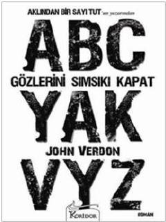

GSEmekli dedektif Dave Gurney'in zekice kurgulanmış gizemli bir cinayeti çözme mücadelesi.
Düğün günü öldürülen bir gelin ve yüzlerce davetlinin gözü önünde işlenen gizemli cinayeti çözmeye çalışan emekli dedektif Dave Gurney'in hikayesini anlatıyor. Katilin yarattığı zekice illüzyonlar ve akıl oyunları, deneyimli dedektifi zorlu bir bulmacanın içine sürükler. John Verdon'un kaleme aldığı bu sürükleyici roman, okuyuculara gerilim dolu anlar vadediyor.